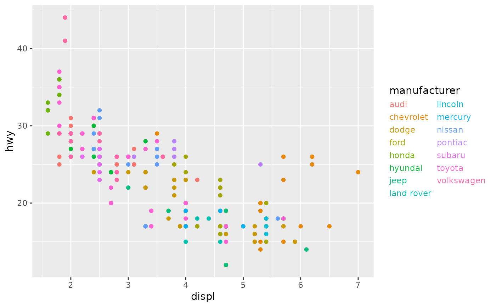
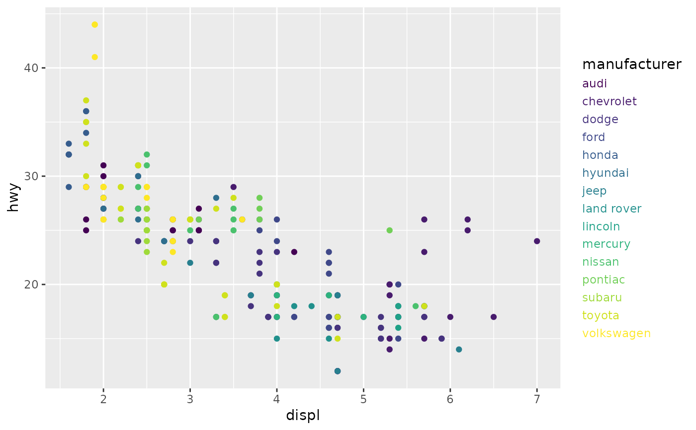

This type of legend shows colour and fill mappings as coloured text. It does
not draw keys as guide_legend() does.
Usage
guide_stringlegend(
title = waiver(),
title.position = NULL,
title.theme = NULL,
title.hjust = NULL,
title.vjust = NULL,
label.theme = NULL,
label.hjust = NULL,
label.vjust = NULL,
family = NULL,
face = NULL,
size = NULL,
spacing.x = NULL,
spacing.y = NULL,
spacing = NULL,
default.units = "pt",
direction = NULL,
nrow = NULL,
ncol = NULL,
byrow = FALSE,
reverse = FALSE,
order = 0,
...
)Arguments
- title
A character string or expression indicating a title of guide. If
NULL, the title is not shown. By default (waiver()), the name of the scale object or the name specified inlabs()is used for the title.- title.position
A character string indicating the position of a title. One of "top" (default for a vertical guide), "bottom", "left" (default for a horizontal guide), or "right."
- title.theme
A theme object for rendering the title text. Usually the object of
element_text()is expected. By default, the theme is specified bylegend.titleintheme()or theme.- title.hjust
A number specifying horizontal justification of the title text.
- title.vjust
A number specifying vertical justification of the title text.
- label.theme
A theme object for rendering the label text. Usually the object of
element_text()is expected. By default, the theme is specified bylegend.textintheme().- label.hjust
A numeric specifying horizontal justification of the label text. The default for standard text is 0 (left-aligned) and 1 (right-aligned) for expressions.
- label.vjust
A numeric specifying vertical justification of the label text.
- family
A
character(1)setting a font family for labels.- face
A
character(1)setting a font face for labels. One of the following:"plain","italic"or"bold","bold.italic".- size
A
numeric(1)setting the label text size in pts.- spacing.x, spacing.y, spacing
A
numeric(1)orunitfor the spacing between label rows and columns. Internally defaults to half the size of the title.- default.units
A
character(1)indicating the default units to use if thespacing.*arguments are only given as numeric vectors.- direction
A character string indicating the direction of the guide. One of "horizontal" or "vertical."
- nrow
The desired number of rows of legends.
- ncol
The desired number of column of legends.
- byrow
logical. If
FALSE(the default) the legend-matrix is filled by columns, otherwise the legend-matrix is filled by rows.- reverse
logical. If
TRUEthe order of legends is reversed.- order
positive integer less than 99 that specifies the order of this guide among multiple guides. This controls the order in which multiple guides are displayed, not the contents of the guide itself. If 0 (default), the order is determined by a secret algorithm.
- ...
ignored.
Examples
p <- ggplot(mpg, aes(displ, hwy)) +
geom_point(aes(colour = manufacturer))
# String legend can be set in the `guides()` function
p + guides(colour = guide_stringlegend(ncol = 2))

# The string legend can also be set as argument to the scale
p + scale_colour_viridis_d(guide = "stringlegend")
